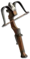

Heyday

Whyte Stag
Ballista
Damage: 44-74 (two-handed)
Required Level: 56
+200-300% Enhanced Weapon Damage
Adds 100-200 Cold Damage
+1 Freezes target
+1 Prevent Monster Heal
+1 Half Freeze Duration
+35-50% Cold Resistance
Socketed (1)
Unique Crossbow
Whyte Stag
- Type
- Crossbow
- Base
- Ballista
- Tier
- Exceptional
- Required level
- 56
- Item level
- 40
- Required strength
- 110
- Required dexterity
- 80
- Max sockets
- 6